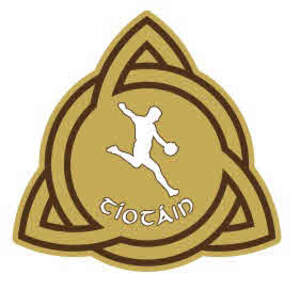

Trade Mark Journal No.2025/041 10 October 2025
UK00004267507 22 September 2025 (9,14,16,18,21,24,25,28,41)

- Class 9
- Encrypted, encoded and machine readable smart cards, credit cards, debit cards and telephone cards; magnetic identity cards; cameras and parts and fillings therefore; camera film; protective clothing; Helmets; hurling helmets; protective helmets for sports of all kinds; parts and accessories for helmets and for protective helmets anti-dazzle shades, glasses and visors; compasses and barometers; binoculars; animated -cartoons; eye glasses and spectacles; cases, chains, cords and frames therefore; cases for photographic apparatus and instruments; containers for contact lenses; optical goods; holograms; screensavers; holographic images; physical representations of images stored electronically for electronic transfer; audio and video recordings, computer games; discs and tapes bearing audio/video recordings; downloadable electronic publications; sound recording and sound reproducing apparatus and instruments; parts and fittings for the aforesaid goods; gramophone and phonographic records; tape recorders; magnetic tapes for recording or reproducing sound or vision; videos and video tapes; jukeboxes; radios; record, CD, DVD players; CD discs; DVD discs; audio tapes; video cassettes; CD discs, DVD discs, audio and video cassettes all for carrying and reproduction of sound and vision; remote control apparatus; photographic transparencies and photographic films prepared for exhibition purposes; calculating machines; computers and computer software, programmes, tapes and discs and parts and fittings therefore; telephones, telephone answering apparatus, telephone recorders and telephones incorporating facsimile machines; time recording apparatus; magnets, magnifying glasses; measures and measuring instruments; mechanical signs; neon signs; sockets, plugs and switches; egg timers; ticket dispensers; parts and fittings for all the aforesaid goods.
- Class 14
- Watches and clocks; horological and chronometrical instruments; jewellery for personal wear and adornment; badges and bars for use therewith; earrings; key and key-rings; key blanks and key chains; trinkets and fobs; pins and pendants; jewellery charms; cases and boxes; buckles; busts and statues; hat and shoe ornaments; works of art; tie pins and clips; cuff links; coins and copper tokens; costume jewellery; silver ornaments; objects of imitation gold; medals; watch straps; parts and fittings for all the aforesaid goods.
- Class 16
- Printed matter; newspapers, magazines and periodical publications; photographs; programme binders and binding material; stationery; instructional and teaching material; manuals; writing or drawing books and pads; birthday cards and cards; postcards; tickets; time tables; notepads and notebooks; photo engravings, photograph albums and albums; address books; almanacs; holders, cases and boxes for pens; blotters and jotters; pens and pencils; pencil holders; paper, cardboard and articles made from these materials; erasers and erasing products; pencil sharpeners; rulers; books and booklets; book markers and book ends; posters; letter trays, calendars, paper weights and paper clips; gift bags and bags for packaging; gift wrap and packaging paper; envelopes, folders, labels, seals, blackboards and scrapbooks; height charts and charts; carrier bags and garbage bags; prints and pictures; paper knives; poster magazines; signs and advertisement boards of paper and cardboard; adhesive tapes and dispensers; office requisites and diaries; hat boxes; pads of paper, stickers and stencils; beer mats; catalogues; paper and cardboard coasters; transfers and diagrams; drawing instruments and materials; paint boxes and brushes; patterns and embroidery designs; engravings and etchings; paper towels and hankies; paper flags; toilet paper; maps; paper and cardboard place mats; graphic prints, representations and reproductions; lithographs and lithographic works of art; portraits; paper table cloths and napkins; cheque book holders.
- Class 18
- Bags; sports bags; athletic bags; suitcases, trunks and travelling bags; school bags and satchels; backpacks and beach bags; umbrellas and umbrella covers; duffel bags, boot bags, holdalls, wallets and bags; belts; key cases and cases; purses; boxes; pouches; credit card holders; walking canes and sticks; attache cases and brief cases; bands and straps of leather; collars and covers for animals; leather trimmings; laces, leads and leashes; parts and fittings for all the aforesaid goods; all the aforesaid goods being made of leather or imitation leather.
- Class 21
- Domestic utensils and containers; chinaware; glassware; porcelain, pottery and earthenware; comb cases and combs; sponges (not for surgical use); half pint glasses; pint glasses; mugs; whiskey glasses; wine glasses; champagne flutes; glass tumblers; glass whiskey tumblers; brushes and brooms; money boxes; toothbrushes; articles for cleaning purposes; baskets; beer mugs; heat insulated containers for beverages; bins; bottle openers; bottles; boxes; bread and cutting boards; trays; statuettes, figurines and model stadia of porcelain, terracotta, glass, china or earthenware; dishes; vanity cases; soap boxes and holders; spice sets; glass stoppers; picnic baskets; piggy banks; pitchers; polishing materials; pots; powder compacts and puffs; rolling pins; drinking vessels and flasks; dustbins; cocktail shakers; napkin holders and rings; paper plates; toothpick holders and toothpicks; tankards; tea caddies and tea services; tea pots; egg cups; enamelled glass; flower pots; gloves for household purposes; ice buckets and ice cube moulds; jugs and kettles; menu card holders; shaving brushes and shaving brush stands; shoe horns; shoe brushes and shoe trees; vases; candy boxes; ceramics for household purposes; chamois leather for cleaning; coasters; coffee services and coffee pots; cooking pots and utensils; cork screws and coolers; crockery; cups; decanters; sign boards; perfume sprayers and burners; salt cellars and shakers; tableware; table utensils; works of art of porcelain, earthenware, china, terracotta or glass; buckets; gifts of china, earthenware, porcelain, terracotta or glass; butter dishes and covers; candle sticks and candle extinguishers; moulds. Candlesticks and candle extinguishers, flasks and goblets. Napkin holders and napkin rings, tankards, urns and vases, nut crackers, salt cellars and salt shakers, all the aforesaid goods being made wholly or principally of precious metal and their alloys or coated therewith.
- Class 24
- Curtains; towels; banners; flags; beach towels; valances; sheets; duvet covers; bath and bed linen; table and household linen; bed blankets, cloths and covers; bedspreads; bunting; coasters; covers for furniture; eiderdowns; handkerchiefs; labels; mattress covers; fabrics; pillow cases and pillow shams; quilts; runners; napkins and serviettes; sleeping bags; table cloths; wall hangings.
- Class 25
- Clothing; articles of outer clothing; articles of sports clothing; footwear being articles of clothing; footwear; headgear (for wear); headwear; shirts; shoes; boots; underwear; coats; overalls; collar protectors and collars; ear muffs; football boots and shoes; fittings of metal for boots and shoes; shorts; t-shirts; sweat-shirts; pants; socks; sweaters; caps; hats; scarves; jackets; dressing gowns; pyjamas; sandals; slippers; footwear; boxer shorts; beach clothes and shoes; baby boots; bibs; romper suits; baby pants and sleep suits; dungarees; braces; belts and berets; wrist bands; track suits; ties; aprons; bath robes; bathing caps and suits; bathing trunks; galoshes; garters; gloves and mittens; headbands; boots; hosiery; jackets; jerseys; jumpers and knitwear; leggings; clothes linings; parkas; shawls; singlets; skirts; vests; visors; waist coats; waterproof clothing; underarmour performance apparel; base layer apparel.
- Class 28
- Games; toys and playthings; party novelty hats; shinguards; gloves for games; balloons; balls; sporting articles (other than clothing); playing balls; footballs; teddy bears; decorations for Christmas trees; Christmas crackers; synthetic Christmas trees and stands; cups for dice; darts; dice; dolls and dolls' clothes; dolls' beds; dolls' houses and rooms; tables for indoor football; golf bags and gloves; jokes and novelties; spinning tops; kites; knee guards and protective padding; marbles; marionettes and puppets; skis; slides; skateboards; skittles; sleighs; masks; mobiles; rattles; roller skates; body building apparatus; playing cards; confetti.
- Class 41
- Recreational information services; recreational information services provided on computer networks and by telephone; instruction and educational services; arranging and conducting of conferences and exhibitions of a sporting and cultural nature; publication of books and text; sport and holiday camp services; club services; organisation of competitions; amusement parks; physical education and health clubs; provision of training, entertainment and sporting activities; organisation of exhibitions of a sporting and cultural nature; conducting of lotteries; film production; video tape film production; practical training and demonstrations; production of radio and television programmes; providing sports facilities; rental of stadium facilities; organising and arranging of sports events.
O'Neills Irish International Sports Company Limited
Representative: Maclachlan IP